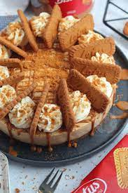

No Bake Biscoff Cheesecake

This no bake biscoff cheesecake is a wonderful dessert to add to any dinner party. It's quick to prepare and can easily be done the day before to save you some time. This recipe serves 12.
Ingredients
Biscuit Base:
- 300g Lotus Biscoff biscuits
- 125g unsalted butter (melted)
Cheesecake Filling:
- 500g cream cheese (full-fat)
- 100g icing sugar
- 250g Biscoff spread
- 1 tsp vanilla extract
- 300ml double cream
Optional Decorations
- 150ml double cream
- 2 tbsp icing sugar
- 75g Biscoff spread
- Biscoff biscuits
Steps
- Blitz the biscuits in a food processor until they're a fine crumb. Mix with the melted butter and press down firmly into an 8"/20cm deep springform tin.
- With an electric mixer. Mix the cream cheese, vanilla extract, icing sugar and biscoff spread until smooth.
- Mix in the double cream and whisk until it is thick and holds itself completely. (Don't whip it too fast!) Alternatively, you can whip the cream separately into stiff peaks and fold through.
- Spread the mixture evenly over the biscuit base and chill in the fridge for at least 5-6 hours, but preferably overnight.
- Remove from the tin and decorate how you like. (Suggested decoration: Whip together the double cream and icing sugar and pipe it on, add a biscoff biscuit per slice and drizzle over some melted biscoff.)